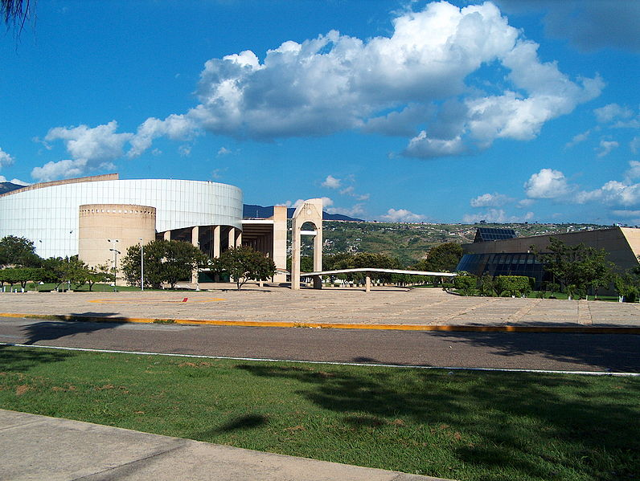
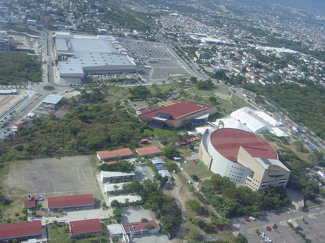
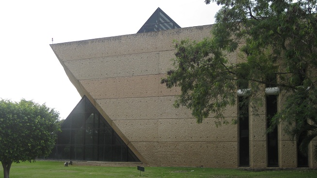
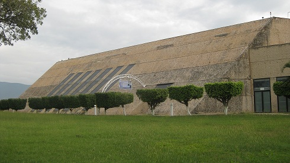
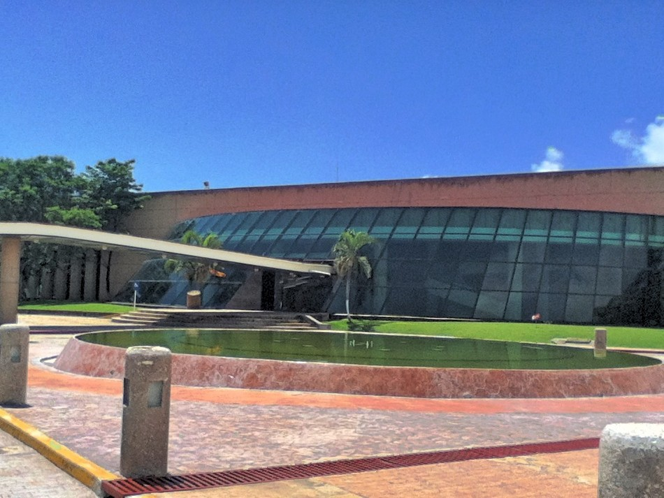

Estos Edificios de singular belleza arquitectónica fueron erigidos en 1993 y proyectados por Abraham Zabludovsky, arquitecto de renombre internacional considerado como uno de los pilares más sólidos de la arquitectura contemporánea. Debido a su capacidad, su infraestructura y su arquitectura finisecular con sus audaces formas, estos edificios se convierten en los mayores monumentos contemporáneos de Tuxtla Gutiérrez.
El Centro de Convenciones y Polyforum de Chiapas es un conjunto de áreas y salones que sirven y funcionan para la realización de diferentes tipos de eventos de carácter cívico, turístico o comercial, y cuenta con la más moderna infraestructura para realizar congresos, convenciones, reuniones de trabajo y diversos eventos tanto sociales como culturales. Todos estos espacios están provistos con los mejores servicios para el excelente desarrollo de eventos a escala nacional e internacional. El poliforum con su moderna infraestructura que permite acomodar a 3,875 espectadores, está a la altura de las mejores instalaciones del país para eventos de gran envergadura de carácter nacional e internacional
Calzada Andrés Serra Rojas y Libramiento Norte, Colonia el retiro, CP 29040.
Contacto:
Teléfonos:
(961)610476/ fax (961)6140980
018007128177
Tomar la avenida central oriente en dirección a Chiapa de Corzo, dar vuelta en la glorieta del monumento “Diana Cazadora” e incorporarse a la calzada Andrés Serra Rojas. Estos Edificios se encuentran justo antes de Torre Chiapas.
En estos recintos su pueden realizar diversos eventos como sociales, culturales, deportivos, turísticos, artísticos, congresos, convenciones, conferencias y ferias, además de exposiciones industriales, arqueológicas, comerciales, etc.





posicione el mouse sobre las imágenes